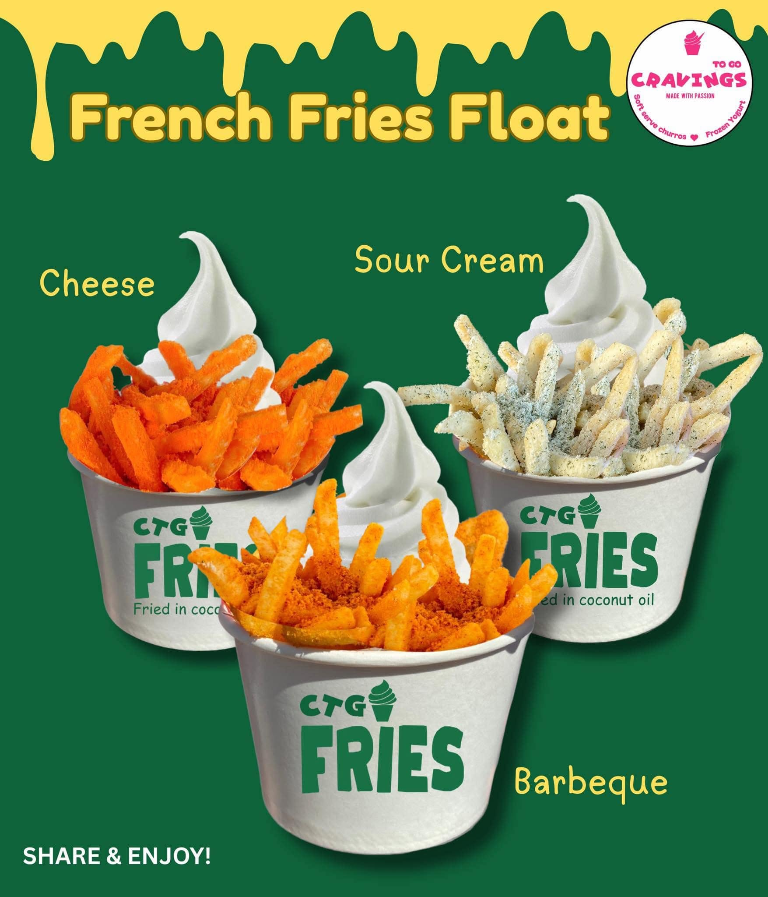
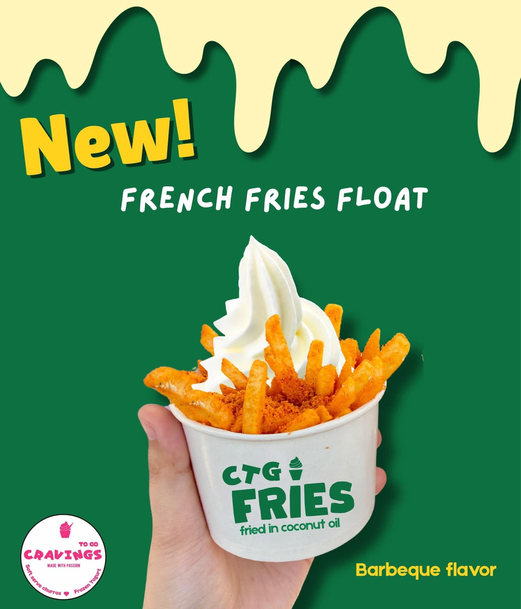

HELLO, I'M
Jeric Albar
Experienced IT Support Specialist with expertise in technical troubleshooting, network infrastructure, printer systems, CCTV solutions, AI automation, remote support, and web technologies. I help businesses improve efficiency through innovative, reliable, and technology-driven solutions.

About Me
Reliable technical support with hands-on troubleshooting experience.
Who I Am
I am a dedicated IT Support Specialist with over five years of hands-on experience in providing technical support, troubleshooting hardware and software issues, managing network infrastructure, maintaining printer systems, and supporting CCTV installations. I am passionate about delivering reliable, efficient, and customer-focused technology solutions that help businesses operate smoothly.
In addition to my technical expertise, I leverage AI-powered automation, remote support tools, and modern web technologies to streamline workflows, improve productivity, and enhance the overall user experience. I am committed to continuous learning and staying current with emerging technologies to provide innovative and effective IT solutions.
What I Do
- Diagnose printer, scanner, and driver issues
- Troubleshoot Wi-Fi, LAN, router, and IP problems
- Support CCTV installation and monitoring issues
- Create simple web systems and dashboards
- Assist users remotely with clear step-by-step support
- Photoshop
- AI Automation & Productivity Tools
Skills
Technical skills I use to solve real-world problems.
Experience
Support experience across hardware, software, and network systems.
IT Staff
Supima Holding Inc.
May 2023 – PresentProvided IT support for hardware, software, printers, networking, CCTV systems, AI-powered automation, Photoshop design, remote technical support, and IT inventory management.
IT Support
Ultimax Building Solutions Inc.
April 2022 – May 2023Delivered technical support for computers, printers, CCTV systems, LAN and fiber-optic cabling, operating system installation, remote troubleshooting, and desktop maintenance.
IT Associate
Byaheros Express
July 2020 – April 2022Supported office users by troubleshooting hardware, software, networking, CCTV systems, and branch technical operations while maintaining reliable IT services.
IT Associate
ATAW Marketing
January 2019 – November 2020Installed and maintained computer systems, POS devices, CCTV equipment, operating systems, and provided hardware troubleshooting and inventory reporting.
PROJECTS
My Professional Portfolio
A collection of my IT support, graphic design, and technical projects.
📁 Cravings To Go
Adobe Photoshop Graphic Design Collection
Click to open
📁 Cravings To Go
Adobe Photoshop Graphic Design Collection
Click to open



CONTACT
Let's Work Together
If you're looking for an IT Support Specialist, feel free to contact me.
📧 Email: Jericalbar@gmail.com
📱 Phone: +63 969 6488 009
📍 Location: Philippines
💻 GitHub: github.com/jericalbar.github.io
💼 LinkedIn: https://www.linkedin.com/in/jeric-albar-6a8169190/